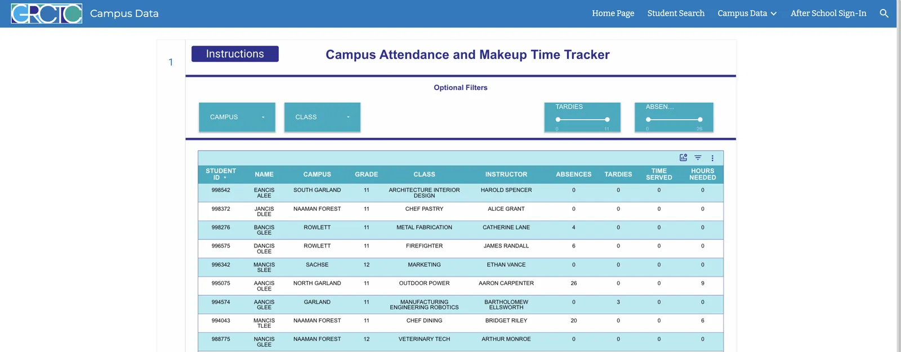

Home / Services / Dashboards & Reporting
When data lives in 5 places and reports are built by hand, decisions wait and nobody trusts the numbers. We build live dashboards and automated reports that pull it all together so you can act in time.


Everything is built around the decisions you make, not a generic template of charts.
A current view of the metrics that matter, ready whenever you or your team open it.
Weekly or monthly reports built and delivered on their own, with no copy and paste.
Numbers from your separate tools pulled into 1 place, so everyone works from the same source.
Get notified when a number crosses a line you set, before it turns into a problem.
Targets, progress, and trends by team, location, or time period, side by side.
Clean PDF and spreadsheet exports for leadership, boards, and compliance reporting.
Click through reporting tools in use today.
Reach, engagement, and channel comparisons pulled from each platform automatically, with 1-click CSV export.
Visit SocialAttendance and make-up time pulled together in 1 filterable tracker, replacing spreadsheets that were updated by hand.
Read the case study
Enrollment, behavior entries, and contacts summarized on 1 screen, with quick actions for the next step.
Read the case studyThis is a sample home services company with made-up numbers. Change the date range and team to see how a custom dashboard answers questions in seconds.
Tell us the numbers you check most, and we will build the view around them.
Every project follows the same 4 steps, so you always know what happens next.
We learn how your business works today and what the right result looks like. No assumptions.
You get a clear quote and plan, and you approve it before anything gets built.
We build in focused stages with check-ins, so you see progress and give feedback as we go.
We launch, walk your team through it, and stay available for changes after.
“We were managing attendance, credit deficiency, state testing results, and truancy tracking in disconnected spreadsheets that nobody trusted. NexaFlow Digital built us a centralized dashboard that gives administrators a real-time view of every metric that drives our compliance reporting.”Derek L., Director of Operations, Public Sector Organization, DFW
A dashboard is a live view you check on demand, so it is always current. A report is a snapshot built on a schedule and delivered to you, usually weekly or monthly. Most businesses use both.
From the systems you already use. We connect to your existing tools and data sources and consolidate them, so the dashboard shows your real numbers instead of a separate set you maintain by hand.
In most cases, yes. How live it is depends on your data sources, and we confirm that with you up front so you know exactly how current the numbers will be.
Whoever you choose. We set up access by role, so leadership, managers, and staff each see what is relevant to them.
Yes. We are based in Frisco, TX and work across DFW, including Plano, McKinney, Allen, Carrollton, Lewisville, and Dallas, plus clients nationwide.
Tell us what you need built, fixed, or automated. You get a clear quote and plan to approve before any work starts.